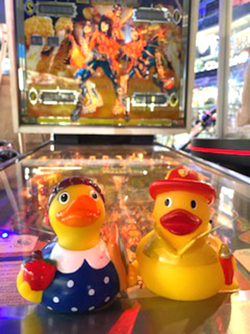
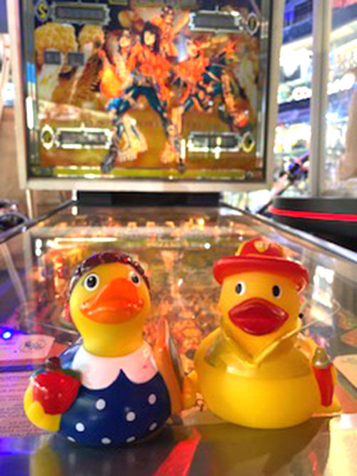
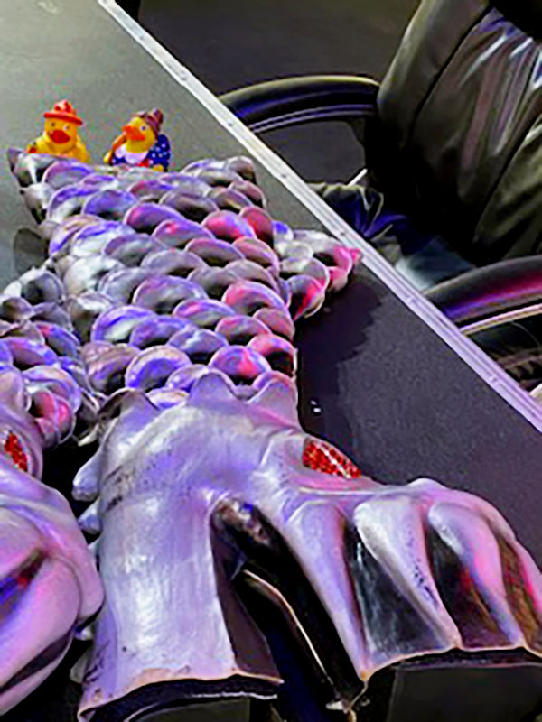
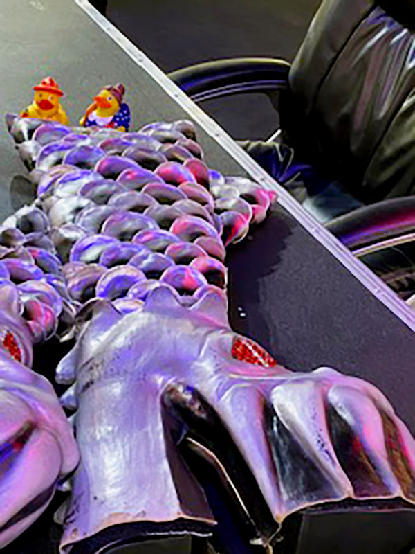
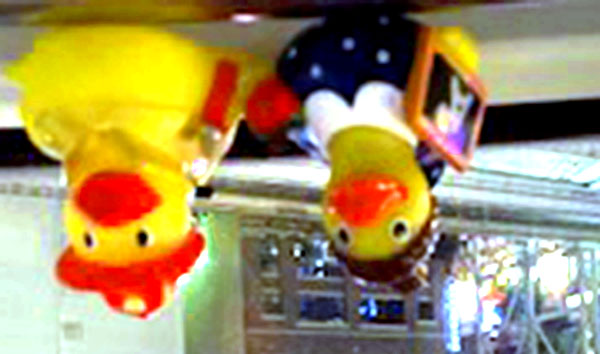
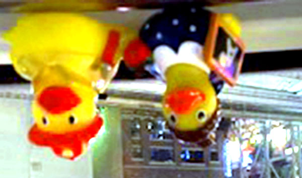
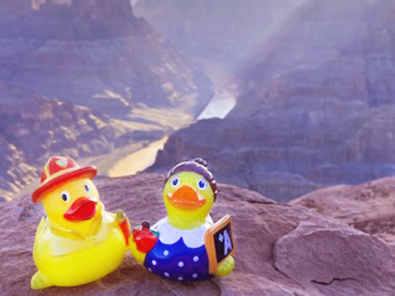
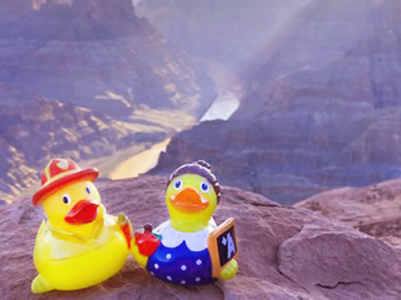
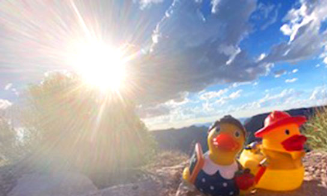
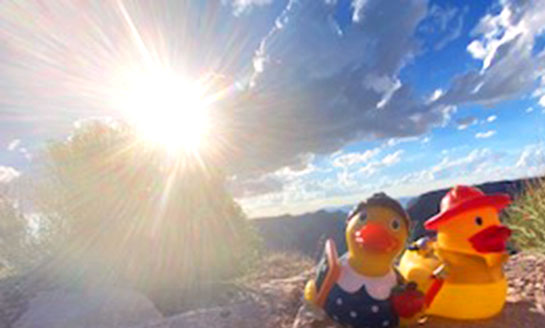

Editing Images
Image 1
 

Changed curves to adjust light, flipped horizontally
Image 2
 

Changed curves to adjust light, brightness and contrast adjusted, hue and saturation adjusted
Image 3
 

image cropped, rotated 180 degrees, hue and saturation adjusted, adjusted light levels
Image 4
 

image flipped horizontally, dodge tool used to brighten ducks specifically, hue and saturation adjusted, color balance adjusted
Image 5
 

image cropped, modified saturation, adjusted brightness and contrast, modified light levels